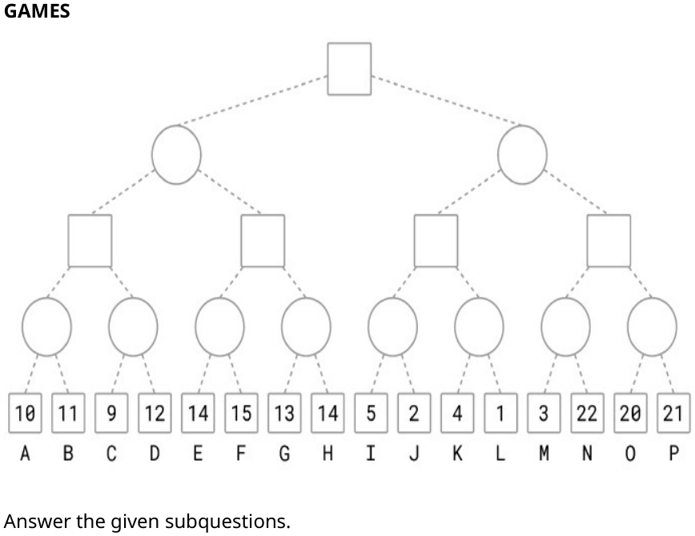

AI Quiz 2 · 2026 Term 2 — Study guide
- Time budget: ≈ 1 min per mark. Map trace ≈ 4 min, TSP node ≈ 3 min, game tree ≈ 3 min, planning ≈ 4 min.
- Order of attack: write h-values / sorted edge list / leaf values first, then the questions fall out one by one.
- Every trace below is machine-generated and cross-checked with the official key (✓ column); a ✗ would flag a transcription issue.
Q1–Q3Search · Branch-and-Bound tree, A*, WA*6 marks
Lesson · Week 5 · A*, WA*, Branch-and-Bound on maps
The three algorithms in one table
| Priority (lowest first) | Guarantee | |
|---|---|---|
| A* | f = g + h | optimal if h admissible (graph search also needs consistency, or re-opening) |
| WA* (w) | f = g + w·h | cost ≤ w × optimal if h admissible — not optimal in general |
| Branch & Bound | g only (h = 0) | always optimal (uniform-cost behaviour on positive costs) |
Bookkeeping that the exam checks
- Each node is a (state, parent, g) record. Refined/expanded = popped from OPEN, not generated.
- Pop the lowest f. Tie → alphabetical (read the tie-breaker line every time).
- For every neighbour m of the popped node n: if new → add to OPEN with parent n; if already on OPEN/CLOSED with a larger g → re-parent to n (and re-open if it was in CLOSED).
- Stop when the goal is popped (not when generated). Path = follow parents back.
Admissibility test in 30 seconds
h is admissible iff h(n) ≤ h*(n) for every n, where h* is the true cheapest cost to G. To refute, find one violation. Fast hunt: look at G's neighbours first — if h(n) > cost(n→G) you are done. Manhattan distance is admissible only when every edge costs ≥ its grid length; the exam maps deliberately use cheap edges (cost 2 across 3 tiles, etc.) so the answer is almost always No.
Tricks for speed
- Write the h-value beside every node first (Manhattan = |Δx|+|Δy|, count tiles on the figure).
- A* with an inadmissible h can return a sub-optimal path: the goal gets popped through a path that looked cheap because h over-estimated the good branch.
- WA* with larger w behaves more greedily (head straight to G); with w=1 it is A*, with w→∞ it is Best-First.
- BnB on these maps = Dijkstra from S; its popped cost at G is the optimal cost. Use it to check whether A*/WA* paths are optimal.
Question data

Worked solution
Edge costs recovered from the tree
| edge | cost | read from |
|---|---|---|
| S–A | 2 | A2 under S |
| S–B | 4 | B4 |
| S–D | 8 | D8 |
| S–G | 24 | G24 |
| A–B | 8 | B10 under A2 |
| A–C | 4 | C6 under A2 |
| B–D | 2 | D6 under B4 |
| C–D | 16 | D22 under C6 |
| C–G | 8 | G14 under C6 |
| D–G | 3 | G9 under D6 |
Q1 · Completing the BnB tree
BnB keeps a bound = cost of the cheapest goal found so far (G14 first, then G9). A node with g ≥ bound is not refined; it stays in the tree as a dead leaf. The only leaf with g < 9 is D8.
| figure node | status when BnB halts |
|---|---|
| A2 | A2 expanded |
| B10 | g=10 ≥ 9 → dead |
| C6 | C6 expanded |
| D22 | dead |
| G14 | goal 14, superseded |
| B4 | B4 expanded |
| A12 | dead |
| D6 | D6 expanded |
| C22 | dead |
| G9 | goal 9 = BOUND |
| D8 | g=8 < 9 → refine |
| G24 | dead |
| state | S | A | B | C | D | G |
|---|---|---|---|---|---|---|
| in the figure | 1 | 2 | 2 | 2 | 3 | 3 |
| + D8 refined (B10, C24, G11) | 0 | 0 | 1 | 1 | 0 | 1 |
| strict total | 1 | 2 | 3 | 3 | 3 | 4 |
| official key | 1 | 2 | 2 | 3 | 3 | 4 |
Q2 · A* (f = g + h) — graph search with re-parenting
A*
| # | refine | g | h | f=g+h | parent | children generated (↻ = cheaper parent found) | OPEN after (node f·parent) | CLOSED |
|---|---|---|---|---|---|---|---|---|
| 1 | S | 0 | 3 | 3 | – | A(g2,f4), B(g4,f8), D(g8,f13), G(g24,f24) | A4·S, B8·S, D13·S, G24·S | S |
| 2 | A | 2 | 2 | 4 | S | C(g6,f7) | C7·A, B8·S, D13·S, G24·S | S, A |
| 3 | C | 6 | 1 | 7 | A | G↻(g14,f14) | B8·S, D13·S, G14·C | S, A, C |
| 4 | B | 4 | 4 | 8 | S | D↻(g6,f11) | D11·B, G14·C | S, A, C, B |
| 5 | D | 6 | 5 | 11 | B | G↻(g9,f9) | G9·D | S, A, C, B, D |
| 6 | G | 9 | 0 | 9 | D | GOAL ✔ | S, A, C, B, D, G |
Tree-search BnB (above) keeps duplicates; graph-search A* does not: B10 via A (10 > 4 on OPEN) and D22 via C (22 > 8 on OPEN) are discarded, while G14 and D6 improve the stored g (↻) and re-parent the node.
Q3 · Weighted A*, w = 2 (f = g + 2h)
WA* w=2
| # | refine | g | h | f=g+2h | parent | children generated (↻ = cheaper parent found) | OPEN after (node f·parent) | CLOSED |
|---|---|---|---|---|---|---|---|---|
| 1 | S | 0 | 3 | 6 | – | A(g2,f6), B(g4,f12), D(g8,f18), G(g24,f24) | A6·S, B12·S, D18·S, G24·S | S |
| 2 | A | 2 | 2 | 6 | S | C(g6,f8) | C8·A, B12·S, D18·S, G24·S | S, A |
| 3 | C | 6 | 1 | 8 | A | G↻(g14,f14) | B12·S, G14·C, D18·S | S, A, C |
| 4 | B | 4 | 4 | 12 | S | D↻(g6,f16) | G14·C, D16·B | S, A, C, B |
| 5 | G | 14 | 0 | 14 | C | GOAL ✔ | S, A, C, B, G |
With h doubled, B (f=12) is popped but only offers D (f=16); the cheaper-looking G (f=14) is then popped before D, so WA* returns the cost-14 path although the optimum is 9. h is not admissible: D: h=5>h*=3.
Answer sheet
| Q | asks for | answer | key | why / how |
|---|---|---|---|---|
| Q1 | occurrences of S,A,B,C,D,G in the final BnB tree | 1,2,2,3,3,4 (official) | ⚠ | my strict reading gives 1,2,3,3,3,4 — see note; method: refine D8 only |
| Q2 | A* path | S,B,D,G | ✓ | cost 9; G re-parented twice (24 → 14 → 9) |
| Q3 | WA* (w=2) path | S,A,C,G | ✓ | cost 14 (optimal is 9) — weight trades optimality for speed |
Q4–Q7TSP Branch-and-Bound · inference and complexity7 marks
Lesson · Week 5 · TSP Branch-and-Bound (include / exclude segments)
Search tree
Root S0 = all tours. Pick the shortest undecided segment xy (tie → alphabetical). Child 1 = S0 + xy (include), child 2 = S0 + ~xy (exclude). Always refine the open node with the smallest lower bound; stop when the cheapest open node is a complete tour.
Lower bound of a node
For each city take the two cheapest allowed edges (permanently-included edges are forced in; excluded ones are not allowed), sum over all cities, then divide by 2 (each segment is counted at both ends).
Inference rules — apply until nothing changes
- Degree 2 reached: a city with 2 included segments → exclude all its other segments.
- Only two options left: a city with exactly 2 non-excluded segments → include both.
- No sub-tours: an included path that would close into a cycle shorter than N cities → exclude the closing segment.
Counting tours in a node: after full inference, the number of Hamiltonian cycles that contain every included and avoid every excluded segment. (N cities → (N−1)!/2 tours in S0: 5→12, 6→60.) Included + excluded counts usually give the fastest sanity check: if included = N the node is a single tour.
Question data

Worked solution
Q4 · Node (S0, ~AB, ~AC, BE, ~DB, ~DA) — infer first, count after
| # | because… | ⇒ |
|---|---|---|
| 1 | A has only 2 segments left (AE, AF) | include AE |
| 2 | A has only 2 segments left (AE, AF) | include AF |
| 3 | E already has 2 included segments (AE, BE) | exclude CE |
| 4 | E already has 2 included segments (AE, BE) | exclude DE |
| 5 | E already has 2 included segments (AE, BE) | exclude EF |
| 6 | path B–E–A–F would close into a sub-tour of 4 < 6 cities | exclude BF |
| 7 | B has only 2 segments left (BC, BE) | include BC |
| 8 | D has only 2 segments left (CD, DF) | include CD |
| 9 | D has only 2 segments left (CD, DF) | include DF |
| 10 | C already has 2 included segments (BC, CD) | exclude CF |
Permanent segments: AE, AF, BC, BE, CD, DF. Chain: A–E–B–C–D–F–A → 1 tour (brute-force check over all 60 tours agrees).
Q5 · Does segment inference affect correctness?
Inference only derives consequences that are already forced (degree 2 ⇒ exclude the rest; only two left ⇒ include; sub-tour ⇒ exclude). It deletes impossible branches and tightens bounds but never removes a feasible tour, so BnB still returns the optimal tour with inference switched off — only with a bigger tree. Hence option A.
Q6–Q7 · Counting leaves of the relaxed tree
| N | segments N(N−1)/2 | relaxed leaves 2^segments | tours (N−1)!/2 |
|---|---|---|---|
| 4 | 6 | 64 | 3 |
| 5 | 10 | 1024 | 12 |
| 6 | 15 | 32768 | 60 |
| 7 | 21 | 2097152 | 360 |
| 8 | 28 | 268435456 | 2520 |
Each of the N(N−1)/2 = Θ(N²) segments is decided yes/no, so the relaxed tree has 2^Θ(N²) leaves → O(2^(N²)). Keeping only leaves that are valid tours leaves exactly (N−1)!/2 → O(N!).
Answer sheet
| Q | asks for | answer | key | why / how |
|---|---|---|---|---|
| Q4 | tours represented by the node | 1 | ✓ | inference forces AE, AF, then E full, then DC, DF, finally CB |
| Q5 | TSP BnB returns the optimal tour… (A: even if inference disabled) | A | ✓ | inference is an optimisation, not a correctness requirement |
| Q6 | leaves of relaxed tree | O(2^(N^2)) | ✓ | N(N−1)/2 binary decisions = Θ(N²) levels |
| Q7 | leaves after pruning non-tours | O(N!) | ✓ | (N−1)!/2 distinct tours |
Q8–Q10Games · Alpha-Beta, SSS*, horizon effect6 marks
Lesson · Week 7 · Minimax, strategies, Alpha-Beta
Minimax & strategies
- Value of a MAX node = max of children; MIN node = min of children. Leaves carry the evaluation (W/D/L = +1/0/−1).
- A strategy for MAX keeps one child at every MAX node and all children at every MIN node. Number of MAX strategies = ∏ (branching factor) over the MAX nodes actually reachable in the strategy tree. 2-ply, b=3 → 3 strategies; MAX–MIN–MAX–MIN with b=2 → 2·2² = 8.
- Best strategy: MAX picks the child with the optimal value at each MAX node, MIN keeps all children. Its leaves are the evidence that the root value is guaranteed.
- Single-leaf flip (W/D/L trees): only leaves that decide the value on the principal line can change the outcome — try raising/lowering each such leaf by one step and re-run minimax.
Alpha-Beta (left to right)
- α = best MAX can already guarantee on the path (starts −∞), β = best MIN can already guarantee (starts +∞). Pass α, β down; update on the way back.
- β-cut at a MAX node: stop as soon as a child value ≥ β. α-cut at a MIN node: stop as soon as a child value ≤ α. The remaining siblings (and their whole subtrees) are pruned.
- Names to remember: Alpha-cut is made by a MIN node and prunes MIN's remaining children; Beta-cut is made by a MAX node.
- Ordering matters: best-case (best move first) examines ≈ b^(d/2) leaves, worst-case all b^d.
Lesson · Week 7 · SSS* (best-first game-tree search)
SSS* keeps an OPEN list of (node, status, h) ordered by h descending (an upper bound on the root value). Ties: newly inserted entries go in front of equal-h entries.
- Start with (root, LIVE, +∞). Pop the top entry.
- LIVE leaf → (leaf, SOLVED, min(h, eval)). LIVE MAX → push all children LIVE (same h). LIVE MIN → push only its first child LIVE.
- SOLVED node n with parent MAX → (parent, SOLVED, h) and purge every OPEN entry below that parent (the parent's other branches are no longer needed). SOLVED n, parent MIN → push the next sibling LIVE, or (parent, SOLVED, h) if n was the last child.
- Stop when (root, SOLVED, h) is popped: h is the minimax value.
Initial cluster = the leaves that become SOLVED before any smaller h appears — first-descent of the tree, one leaf per MIN pair. Leaves SOLVED later are the ones listed in "SOLVED (other than initial)" questions. A pruned-from-queue SOLVED leaf is one removed by the purge step without ever being popped.
Question data

Worked solution
Cut log
| node | cut | why | leaves pruned |
|---|---|---|---|
| MIN {C…D} | alpha-cut after child 1 (value 9) | α=10, β=∞ → value ≤ α | D |
| MAX {E…H} | beta-cut after child 1 (value 14) | α=−∞, β=10 → value ≥ β | G, H |
| MIN {I…J} | alpha-cut after child 1 (value 5) | α=10, β=∞ → value ≤ α | J |
| MIN {K…L} | alpha-cut after child 1 (value 4) | α=10, β=∞ → value ≤ α | L |
| MIN {I…P} | alpha-cut after child 1 (value 5) | α=10, β=∞ → value ≤ α | M, N, O, P |
SSS* trace — entries are node.status.h (L = LIVE, S = SOLVED); OPEN is sorted top→bottom
| # | popped | pushed | purged | OPEN after |
|---|---|---|---|---|
| 1 | {A…P}.L.∞ | {A…H}.L.∞, {I…P}.L.∞ | {A…H}.L.∞, {I…P}.L.∞ | |
| 2 | {A…H}.L.∞ | {A…D}.L.∞ | {A…D}.L.∞, {I…P}.L.∞ | |
| 3 | {A…D}.L.∞ | {A…B}.L.∞, {C…D}.L.∞ | {A…B}.L.∞, {C…D}.L.∞, {I…P}.L.∞ | |
| 4 | {A…B}.L.∞ | A.L.∞ | A.L.∞, {C…D}.L.∞, {I…P}.L.∞ | |
| 5 | A.L.∞ | A.S.10 | {C…D}.L.∞, {I…P}.L.∞, A.S.10 | |
| 6 | {C…D}.L.∞ | C.L.∞ | C.L.∞, {I…P}.L.∞, A.S.10 | |
| 7 | C.L.∞ | C.S.9 | {I…P}.L.∞, A.S.10, C.S.9 | |
| 8 | {I…P}.L.∞ | {I…L}.L.∞ | {I…L}.L.∞, A.S.10, C.S.9 | |
| 9 | {I…L}.L.∞ | {I…J}.L.∞, {K…L}.L.∞ | {I…J}.L.∞, {K…L}.L.∞, A.S.10, C.S.9 | |
| 10 | {I…J}.L.∞ | I.L.∞ | I.L.∞, {K…L}.L.∞, A.S.10, C.S.9 | |
| 11 | I.L.∞ | I.S.5 | {K…L}.L.∞, A.S.10, C.S.9, I.S.5 | |
| 12 | {K…L}.L.∞ | K.L.∞ | K.L.∞, A.S.10, C.S.9, I.S.5 | |
| 13 | K.L.∞ | K.S.4 | A.S.10, C.S.9, I.S.5, K.S.4 | |
| 14 | A.S.10 | B.L.10 | B.L.10, C.S.9, I.S.5, K.S.4 | |
| 15 | B.L.10 | B.S.10 | B.S.10, C.S.9, I.S.5, K.S.4 | |
| 16 | B.S.10 | {A…B}.S.10 | {A…B}.S.10, C.S.9, I.S.5, K.S.4 | |
| 17 | {A…B}.S.10 | {A…D}.S.10 | C.S.9 | {A…D}.S.10, I.S.5, K.S.4 |
| 18 | {A…D}.S.10 | {E…H}.L.10 | {E…H}.L.10, I.S.5, K.S.4 | |
| 19 | {E…H}.L.10 | {E…F}.L.10, {G…H}.L.10 | {E…F}.L.10, {G…H}.L.10, I.S.5, K.S.4 | |
| 20 | {E…F}.L.10 | E.L.10 | E.L.10, {G…H}.L.10, I.S.5, K.S.4 | |
| 21 | E.L.10 | E.S.10 | E.S.10, {G…H}.L.10, I.S.5, K.S.4 | |
| 22 | E.S.10 | F.L.10 | F.L.10, {G…H}.L.10, I.S.5, K.S.4 | |
| 23 | F.L.10 | F.S.10 | F.S.10, {G…H}.L.10, I.S.5, K.S.4 | |
| 24 | F.S.10 | {E…F}.S.10 | {E…F}.S.10, {G…H}.L.10, I.S.5, K.S.4 | |
| 25 | {E…F}.S.10 | {E…H}.S.10 | {G…H}.L.10 | {E…H}.S.10, I.S.5, K.S.4 |
| 26 | {E…H}.S.10 | {A…H}.S.10 | {A…H}.S.10, I.S.5, K.S.4 | |
| 27 | {A…H}.S.10 | {A…P}.S.10 | I.S.5, K.S.4 | {A…P}.S.10 |
| 28 | {A…P}.S.10 | — | DONE: root value 10 |
Initial cluster (leaves SOLVED on the first dive, h = ∞): A, C, I, K. Leaves SOLVED later: B, E, F. SOLVED leaves purged without being popped: C, I, K.
Q8 reading: left→right Alpha-Beta prunes D, J, L, M, N, O, P by α-cuts (made by MIN nodes) and G, H by β-cuts (made by a MAX node whose first child already reached β = 10). The question asks only for the β-cut victims.
Q10 · Horizon effect
A depth-limited search evaluates positions at a fixed horizon. If something decisive (a capture, a loss, a forced win) lies just beyond the horizon, the static evaluation cannot see it, so a bad line can be rated good — and the program may even play delaying moves to push the inevitable damage past the horizon. Remedies: quiescence search (keep expanding unstable positions) and singular extensions.
Answer sheet
| Q | asks for | answer | key | why / how |
|---|---|---|---|---|
| Q8 | horizon nodes pruned by β-cuts | G,H | ✓ | MAX node over (E,F | G,H): first child MIN(E,F)=14 ≥ β=10 ⇒ β-cut, MIN(G,H) never examined |
| Q9 | SOLVED leaves removed by the purge step | C,I,K | ✓ | SOLVED leaves sitting in OPEN when a MAX parent is solved |
| Q10 | define the horizon effect | written answer (≤100 words) | – | fixed depth cutoff · damaging event just beyond it is invisible · evaluation misjudges · delaying tactics · fix: quiescence / extensions |
Q11–Q13Automated planning · Sussman anomaly6 marks
Lesson · Week 8 · Blocks-world planning & Goal Stack Planning
Operators (preconditions → effects)
| Action | Pre | Add | Delete |
|---|---|---|---|
| Pickup(x) | armEmpty, clear(x), onTable(x) | holding(x) | armEmpty, onTable(x) |
| Putdown(x) | holding(x) | armEmpty, onTable(x) | holding(x) |
| Unstack(x,y) | armEmpty, clear(x), on(x,y) | holding(x), clear(y) | armEmpty, on(x,y) |
| Stack(x,y) | holding(x), clear(y) | armEmpty, on(x,y) | holding(x), clear(y) |
Applicable (start state): all preconditions already true → check each against the start facts. Relevant (goal): the action adds at least one goal literal.
Goal Stack Planning (GSP)
- Push the compound goal, then its literals one by one (last literal ends on top).
- Pop a satisfied literal; for an unsatisfied literal choose an action that adds it, push the action, then its compound precondition and its literals.
- When an action reaches the top, execute it (update the state) and append it to the plan.
- After a compound goal is finished, re-check it — earlier subgoals may have been undone (Sussman anomaly) and the compound goal is re-pushed.
Optimal plan = BFS over states (shortest action sequence). GSP is not guaranteed optimal; swapping the order of goal literals can make it optimal or not — compute both orders, compare to BFS length.
Question data

Worked solution
Goal: on(A,B), on(B,C)
Optimal plan by BFS over states — 6 actions: Unstack(C,A) → Putdown(C) → Pickup(B) → Stack(B,C) → Pickup(A) → Stack(A,B)
Applicable in the start state (2 of 18 ground actions)
| action | preconditions | status |
|---|---|---|
| Pickup(B) | armEmpty, clear(B), onTable(B) | ✔ all true now |
| Unstack(C,A) | armEmpty, clear(C), on(C,A) | ✔ all true now |
Relevant to the goal (action adds a goal literal): Stack(A,B), Stack(B,C).
Goal Stack Planning trace (goal list pushed left→right, last literal on top) — plan found: Pickup(B) , Stack(B,C) , Unstack(B,C) , Putdown(B) , Unstack(C,A) , Putdown(C) , Pickup(A) , Stack(A,B) , Unstack(A,B) , Putdown(A) , Pickup(B) , Stack(B,C) , Pickup(A) , Stack(A,B) (14 actions)
| # | top of stack | step | stack (top → bottom) |
|---|---|---|---|
| 1 | {on(A,B), on(B,C)} | push compound goal's literals | {on(A,B), on(B,C)} |
| 2 | on(B,C) | choose Stack(B,C) to achieve it | on(B,C) | on(A,B) | {on(A,B), on(B,C)} |
| 3 | clear(C) | already true → pop | clear(C) | holding(B) | {holding(B), clear(C)} | Stack(B,C) | on(A,B) | … |
| 4 | holding(B) | choose Pickup(B) to achieve it | holding(B) | {holding(B), clear(C)} | Stack(B,C) | on(A,B) | {on(A,B), on(B,C)} |
| 5 | onTable(B) | already true → pop | onTable(B) | clear(B) | armEmpty | {armEmpty, clear(B), onTable(B)} | Pickup(B) | … |
| 6 | clear(B) | already true → pop | clear(B) | armEmpty | {armEmpty, clear(B), onTable(B)} | Pickup(B) | {holding(B), clear(C)} | … |
| 7 | armEmpty | already true → pop | armEmpty | {armEmpty, clear(B), onTable(B)} | Pickup(B) | {holding(B), clear(C)} | Stack(B,C) | … |
| 8 | {armEmpty, clear(B), onTable(B)} | compound goal satisfied → pop | {armEmpty, clear(B), onTable(B)} | Pickup(B) | {holding(B), clear(C)} | Stack(B,C) | on(A,B) | … |
| 9 | Pickup(B) | execute → append to plan | Pickup(B) | {holding(B), clear(C)} | Stack(B,C) | on(A,B) | {on(A,B), on(B,C)} |
| 10 | {holding(B), clear(C)} | compound goal satisfied → pop | {holding(B), clear(C)} | Stack(B,C) | on(A,B) | {on(A,B), on(B,C)} |
| 11 | Stack(B,C) | execute → append to plan | Stack(B,C) | on(A,B) | {on(A,B), on(B,C)} |
| 12 | on(A,B) | choose Stack(A,B) to achieve it | on(A,B) | {on(A,B), on(B,C)} |
| 13 | clear(B) | already true → pop | clear(B) | holding(A) | {holding(A), clear(B)} | Stack(A,B) | {on(A,B), on(B,C)} |
| 14 | holding(A) | choose Pickup(A) to achieve it | holding(A) | {holding(A), clear(B)} | Stack(A,B) | {on(A,B), on(B,C)} |
| 15 | onTable(A) | already true → pop | onTable(A) | clear(A) | armEmpty | {armEmpty, clear(A), onTable(A)} | Pickup(A) | … |
| 16 | clear(A) | choose Unstack(C,A) to achieve it | clear(A) | armEmpty | {armEmpty, clear(A), onTable(A)} | Pickup(A) | {holding(A), clear(B)} | … |
| 17 | on(C,A) | already true → pop | on(C,A) | clear(C) | armEmpty | {armEmpty, clear(C), on(C,A)} | Unstack(C,A) | … |
| 18 | clear(C) | choose Unstack(B,C) to achieve it | clear(C) | armEmpty | {armEmpty, clear(C), on(C,A)} | Unstack(C,A) | armEmpty | … |
| 19 | on(B,C) | already true → pop | on(B,C) | clear(B) | armEmpty | {armEmpty, clear(B), on(B,C)} | Unstack(B,C) | … |
| 20 | clear(B) | already true → pop | clear(B) | armEmpty | {armEmpty, clear(B), on(B,C)} | Unstack(B,C) | armEmpty | … |
| 21 | armEmpty | already true → pop | armEmpty | {armEmpty, clear(B), on(B,C)} | Unstack(B,C) | armEmpty | {armEmpty, clear(C), on(C,A)} | … |
| 22 | {armEmpty, clear(B), on(B,C)} | compound goal satisfied → pop | {armEmpty, clear(B), on(B,C)} | Unstack(B,C) | armEmpty | {armEmpty, clear(C), on(C,A)} | Unstack(C,A) | … |
| 23 | Unstack(B,C) | execute → append to plan | Unstack(B,C) | armEmpty | {armEmpty, clear(C), on(C,A)} | Unstack(C,A) | armEmpty | … |
| 24 | armEmpty | choose Putdown(B) to achieve it | armEmpty | {armEmpty, clear(C), on(C,A)} | Unstack(C,A) | armEmpty | {armEmpty, clear(A), onTable(A)} | … |
| 25 | holding(B) | already true → pop | holding(B) | {holding(B)} | Putdown(B) | {armEmpty, clear(C), on(C,A)} | Unstack(C,A) | … |
| 26 | {holding(B)} | compound goal satisfied → pop | {holding(B)} | Putdown(B) | {armEmpty, clear(C), on(C,A)} | Unstack(C,A) | armEmpty | … |
| 27 | Putdown(B) | execute → append to plan | Putdown(B) | {armEmpty, clear(C), on(C,A)} | Unstack(C,A) | armEmpty | {armEmpty, clear(A), onTable(A)} | … |
| 28 | {armEmpty, clear(C), on(C,A)} | compound goal satisfied → pop | {armEmpty, clear(C), on(C,A)} | Unstack(C,A) | armEmpty | {armEmpty, clear(A), onTable(A)} | Pickup(A) | … |
| 29 | Unstack(C,A) | execute → append to plan | Unstack(C,A) | armEmpty | {armEmpty, clear(A), onTable(A)} | Pickup(A) | {holding(A), clear(B)} | … |
| 30 | armEmpty | choose Putdown(C) to achieve it | armEmpty | {armEmpty, clear(A), onTable(A)} | Pickup(A) | {holding(A), clear(B)} | Stack(A,B) | … |
| 31 | holding(C) | already true → pop | holding(C) | {holding(C)} | Putdown(C) | {armEmpty, clear(A), onTable(A)} | Pickup(A) | … |
| 32 | {holding(C)} | compound goal satisfied → pop | {holding(C)} | Putdown(C) | {armEmpty, clear(A), onTable(A)} | Pickup(A) | {holding(A), clear(B)} | … |
| 33 | Putdown(C) | execute → append to plan | Putdown(C) | {armEmpty, clear(A), onTable(A)} | Pickup(A) | {holding(A), clear(B)} | Stack(A,B) | … |
| 34 | {armEmpty, clear(A), onTable(A)} | compound goal satisfied → pop | {armEmpty, clear(A), onTable(A)} | Pickup(A) | {holding(A), clear(B)} | Stack(A,B) | {on(A,B), on(B,C)} |
| 35 | Pickup(A) | execute → append to plan | Pickup(A) | {holding(A), clear(B)} | Stack(A,B) | {on(A,B), on(B,C)} |
| 36 | {holding(A), clear(B)} | compound goal satisfied → pop | {holding(A), clear(B)} | Stack(A,B) | {on(A,B), on(B,C)} |
| 37 | Stack(A,B) | execute → append to plan | Stack(A,B) | {on(A,B), on(B,C)} |
| 38 | {on(A,B), on(B,C)} | push compound goal's literals | {on(A,B), on(B,C)} |
| 39 | on(B,C) | choose Stack(B,C) to achieve it | on(B,C) | on(A,B) | {on(A,B), on(B,C)} |
| 40 | clear(C) | already true → pop | clear(C) | holding(B) | {holding(B), clear(C)} | Stack(B,C) | on(A,B) | … |
| 41 | holding(B) | choose Pickup(B) to achieve it | holding(B) | {holding(B), clear(C)} | Stack(B,C) | on(A,B) | {on(A,B), on(B,C)} |
| 42 | onTable(B) | already true → pop | onTable(B) | clear(B) | armEmpty | {armEmpty, clear(B), onTable(B)} | Pickup(B) | … |
| 43 | clear(B) | choose Unstack(A,B) to achieve it | clear(B) | armEmpty | {armEmpty, clear(B), onTable(B)} | Pickup(B) | {holding(B), clear(C)} | … |
| 44 | on(A,B) | already true → pop | on(A,B) | clear(A) | armEmpty | {armEmpty, clear(A), on(A,B)} | Unstack(A,B) | … |
| 45 | clear(A) | already true → pop | clear(A) | armEmpty | {armEmpty, clear(A), on(A,B)} | Unstack(A,B) | armEmpty | … |
| 46 | armEmpty | already true → pop | armEmpty | {armEmpty, clear(A), on(A,B)} | Unstack(A,B) | armEmpty | {armEmpty, clear(B), onTable(B)} | … |
| 47 | {armEmpty, clear(A), on(A,B)} | compound goal satisfied → pop | {armEmpty, clear(A), on(A,B)} | Unstack(A,B) | armEmpty | {armEmpty, clear(B), onTable(B)} | Pickup(B) | … |
| 48 | Unstack(A,B) | execute → append to plan | Unstack(A,B) | armEmpty | {armEmpty, clear(B), onTable(B)} | Pickup(B) | {holding(B), clear(C)} | … |
| 49 | armEmpty | choose Putdown(A) to achieve it | armEmpty | {armEmpty, clear(B), onTable(B)} | Pickup(B) | {holding(B), clear(C)} | Stack(B,C) | … |
| 50 | holding(A) | already true → pop | holding(A) | {holding(A)} | Putdown(A) | {armEmpty, clear(B), onTable(B)} | Pickup(B) | … |
| 51 | {holding(A)} | compound goal satisfied → pop | {holding(A)} | Putdown(A) | {armEmpty, clear(B), onTable(B)} | Pickup(B) | {holding(B), clear(C)} | … |
| 52 | Putdown(A) | execute → append to plan | Putdown(A) | {armEmpty, clear(B), onTable(B)} | Pickup(B) | {holding(B), clear(C)} | Stack(B,C) | … |
| 53 | {armEmpty, clear(B), onTable(B)} | compound goal satisfied → pop | {armEmpty, clear(B), onTable(B)} | Pickup(B) | {holding(B), clear(C)} | Stack(B,C) | on(A,B) | … |
| 54 | Pickup(B) | execute → append to plan | Pickup(B) | {holding(B), clear(C)} | Stack(B,C) | on(A,B) | {on(A,B), on(B,C)} |
| 55 | {holding(B), clear(C)} | compound goal satisfied → pop | {holding(B), clear(C)} | Stack(B,C) | on(A,B) | {on(A,B), on(B,C)} |
| 56 | Stack(B,C) | execute → append to plan | Stack(B,C) | on(A,B) | {on(A,B), on(B,C)} |
| 57 | on(A,B) | choose Stack(A,B) to achieve it | on(A,B) | {on(A,B), on(B,C)} |
| 58 | clear(B) | already true → pop | clear(B) | holding(A) | {holding(A), clear(B)} | Stack(A,B) | {on(A,B), on(B,C)} |
| 59 | holding(A) | choose Pickup(A) to achieve it | holding(A) | {holding(A), clear(B)} | Stack(A,B) | {on(A,B), on(B,C)} |
| 60 | onTable(A) | already true → pop | onTable(A) | clear(A) | armEmpty | {armEmpty, clear(A), onTable(A)} | Pickup(A) | … |
(first 60 of 67 events shown)
Goal order reversed (on(B,C), on(A,B)): GSP gives 10 actions vs optimal 6 → not optimal. Original order: not optimal (14 vs 6).
Why the answers are what they are
| Q | claim | verdict | evidence above |
|---|---|---|---|
| Q11 | Forward State-Space Planning solves Sussman | Yes | it searches states (BFS ⇒ even optimal, 6 actions); the anomaly only hurts goal-ordering planners |
| Q12 | Goal Stack Planning solves Sussman | Yes | it reaches the goal, but via a long non-optimal plan — see the repeated actions in the GSP trace |
| Q13-A | solves every unit goal exactly once | False | a finished unit goal is undone to free blocks, then solved again |
| Q13-B | never repeats the same action | False | Pickup(B) and Stack(B,C) appear twice in the GSP plan |
| Q13-C | linear, no backtracking | False | GSP has choice points (which relevant action / goal order) that can be revisited |
| Q13-D | none of these | True | A, B, C all fail |
Answer sheet
| Q | asks for | answer | key | why / how |
|---|---|---|---|---|
| Q11 | Forward State Space Planning solves Sussman? (A=Yes) | A | ✓ | complete search over states |
| Q12 | Goal Stack Planning solves Sussman? (A=Yes) | A | ✓ | terminates with a (non-optimal) plan |
| Q13 | true about GSP | D | ✓ | unit goals re-solved, actions repeated, choice points exist |